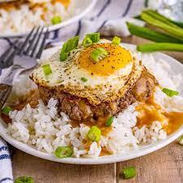
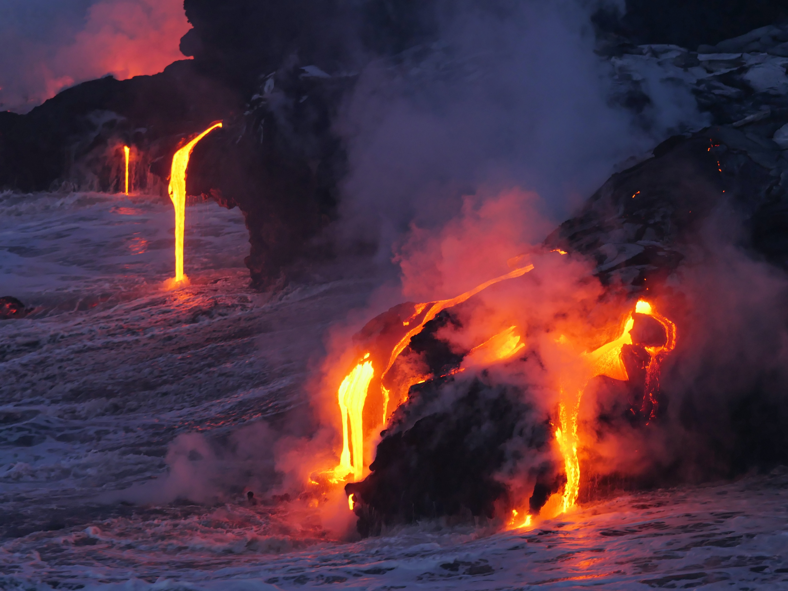
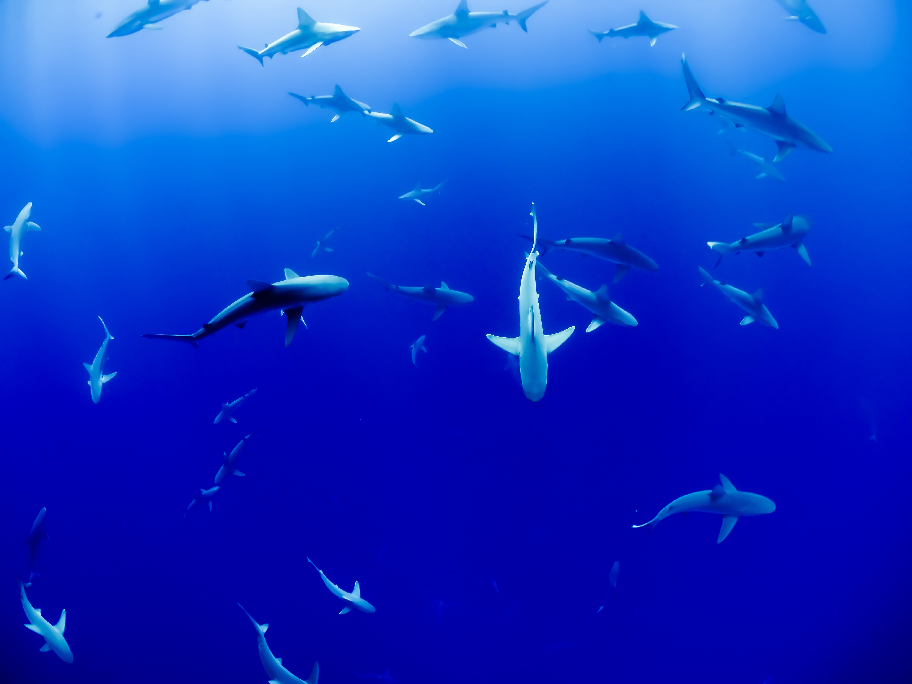

Cuisine

I would love to try authentic Loco Mocos. These were first created out of cost efficiency.
The bottom layer is white rice covered in brown gravy. Next comes a hamburger patty seasoned
to taste. Last is 1-2 fried eggs with a little bit of the yoke ready to run down the sides.
I've also seen some use a steak or boneless pork chop in place of the hamburger patty.
I've also see some made with scrambled eggs instead of fried eggs. I have made them at home
and my family loves them but I always wonder if it tastes close to what is served in Hawaii.
Volcanoes

Another thing I would love to visit in Hawaii would be the volcanoes.
Each island is made up of volcanoes. Today there are six active volcanoes.
The main type of volcanoes are "shield" volcanoes. These produce lava flows
that form gently sloping, shield-like mountains. It's amazing to think of all
the beauty of Hawaii that has been a product of the destructiveness of volcano
eruptions.
Snorkeling

Snorkeling is an activity that is on my bucket list. Swimming with sharks, sea
turtles and a variety of fish would be an experience of a lifetime. Bull sharks
are my favorite with Tiger sharks a close second. You can also see manta rays, octopus,
sea cucumbers, Hawaiian spiny lobsters Moray eel, and so much more when Snorkeling
off the coast of Hawaii.